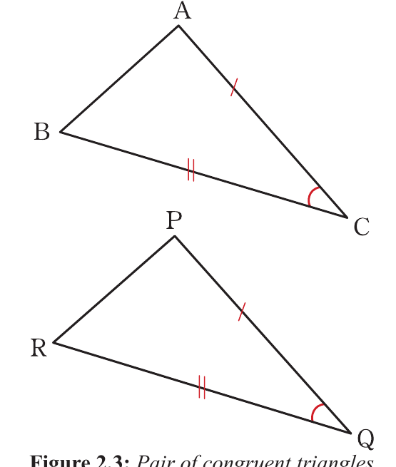

Side-Angle-Side (SAS) postulate
Two triangles are congruent if two pairs of their corresponding sides and the angles included between the two sides are equal. Figure 2.3 illustrates the postulate.

From Figure 2.3, AC and PQ, and BC and RQ are two pairs of corresponding sides while ÂBC and P̂RQ is a pair of corresponding angles. It follows that,
AC = PQ (given)
BĈA = RQ̂P (given)
CB = RQ (given)
Therefore, △ABC ≅ △PRQ (by SAS).
Since the two triangles are congruent, it follows that, all the corresponding sides and angles are equal.
That is, BÂC = QP̂R, AB̂C = PR̂O, and AB = PR.